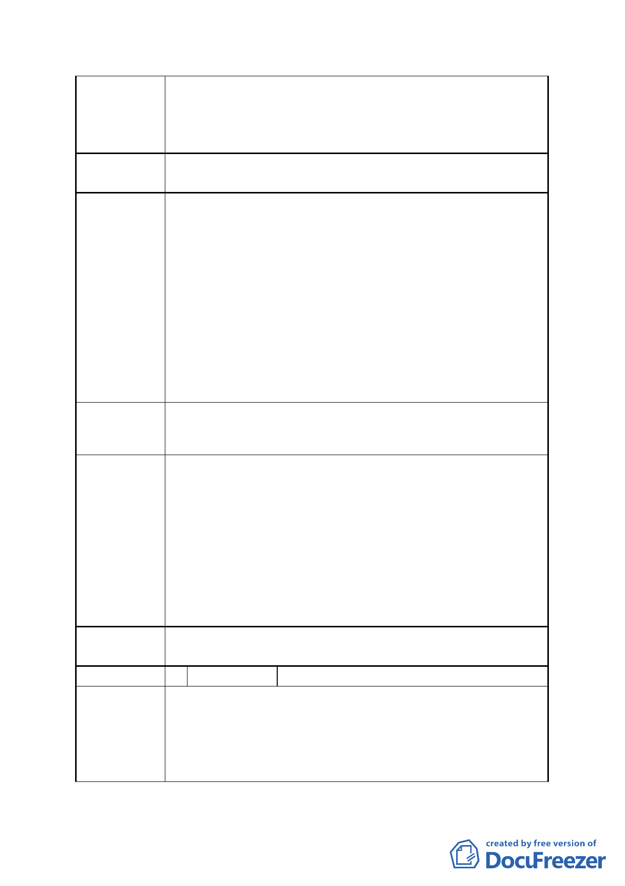

本開發案應秉持外部成本內部化原則，由開發者擬具大眾運輸及轉
乘接駁等交通配套措施。
2.另有關公車路線規劃部分，將配合未來本地區整體發展情形，由本
府交通單位評估設置。
委員會決議 依市府回應說明辦理
陳情理由 7
建議辦法 7
市府回應
有關本次變更增加「本計畫範圍不得申請容積獎勵」之條文，惟本基
地依都市計畫說明書規定需留設 5 公尺帶狀公共開放空間及留設廣
場式開放空間供公眾使用，留設之供公共使用開放空間因容積上限規
定無任何獎勵值，然留設之開放空間仍須負擔設計規劃施工及日後維
護成本。
參考依據 97.08.05 府都規字第 09733252100 號函公告實施之「變更
臺北市『基隆河（中山橋至成美橋段）計畫案（南段地區）』及『內
湖區新里族段羊稠小段附近地區都市計畫案』計畫案」公民或團體所
提意見綜理表編號 2 之精神與委員會決議，建請維持原都市計畫書及
「臺北市土地使用分區管制規則」之綜合設計放寬及容積獎勵規定，
以符合公平原則並提高開發意願。
建請維持原都市計畫書及「臺北市土地使用分區管制規則」之綜合設
計放寬及容積獎勵規定。
1.本計畫變更目的係為利民間參與投資臺北市影視音產業園區之公
共建設開發，由臺北市政府取得土地後，提供民間規劃興建使用，
故由民間投資人負責開放空間之規劃設計、施工及維護，除可符合
促參之公私合作、利益回饋等精神，且完善設計與維護之開放空間
實有助提升建築環境品質與資產使用價值。
2.查 97 年 8 月 5 日公告計畫案內之公民或團體所提意見綜理表編號
2，係為容積率 225%之情形，本計畫案提高容積率至 360%，已高於
原容積獎勵上限(337.5%)，並考量松山機場航高管制限制，已無給
予容積獎勵之需要，建議不予採納。
委員會決議 依市府回應說明辦理
編號
陳情理由
2 陳情人
遠雄藝朗管理委員會
政府為提升華人文化創意產業之發展，並有利影視音園區推動和產業
需求。有意提高容積率及建蔽率，其立意良善，值得鼓勵。惟在本重
劃區內，並不如信義計畫區及大直重劃區，有公有停車場及大眾運輸
交通工具，且本區也不適用停車獎勵辦法，因此恐造成區域交通之負
擔，期望市府在規劃上一併考慮員工及廠商出入交通問題。
- 12 -